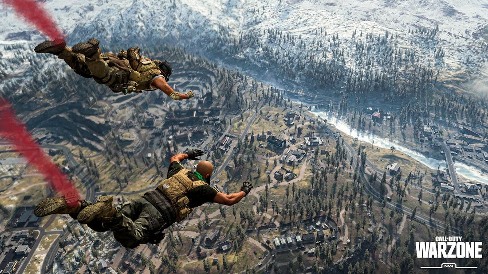
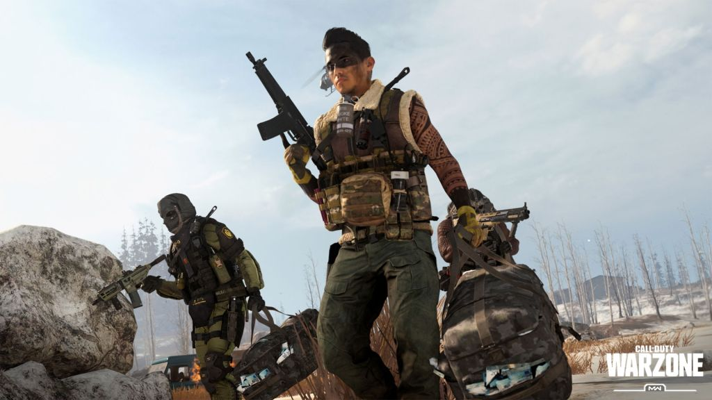
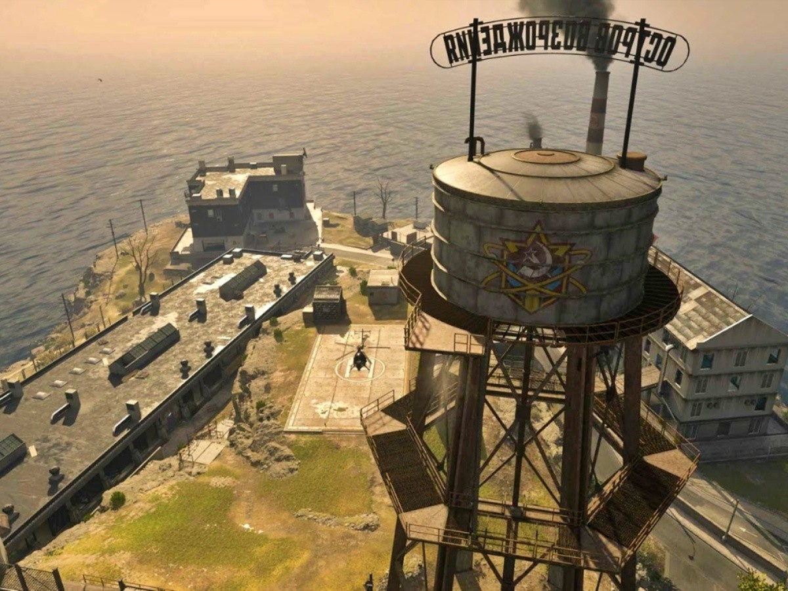

Jugabilidad y modos de juego
Warzone presenta dos modos de juego principales: Battle Royale y Saqueo. Es la segunda entrega principal de Battle Royale en la franquicia Call of Duty, siguiendo el modo "Blackout" de Call of Duty: Black Ops 4 (2018). Warzone se diferencia de Black Ops 4 al reducir la dependencia de los dispositivos equipables y, en cambio, fomentar la acumulación de una nueva moneda en el juego llamada Dinero. Warzone admite hasta 150 jugadores en una sola partida, lo que supera el tamaño típico de 100 jugadores visto en otros títulos de Battle Royale. Algunos modos de tiempo limitado admiten 200 jugadores o traer más de 2 armas.
Battle Royale
El modo Battle Royale es similar a otros títulos del género donde los jugadores compiten en un mapa que se reduce continuamente para ser el último jugador que queda. Los jugadores se lanzan en paracaídas sobre un gran mapa del juego, donde se encuentran con otros jugadores. A medida que avanza el juego y los jugadores son eliminados, el área jugable se reduce, lo que obliga a los jugadores restantes a ocupar espacios más reducidos. En Warzone, las áreas no jugables se contaminan con un gas verde que agota la salud y eventualmente mata al jugador si no regresa al área jugable segura. A diferencia de otros títulos, Warzone introduce un mayor énfasis en los vehículos y una nueva mecánica de moneda en el juego. El paracaidismo no está restringido, y el jugador puede abrir y cortar su paracaídas un número ilimitado de veces mientras está en el aire. En el lanzamiento, el juego admitía tríos (grupos de hasta tres jugadores) con una opción para deshabilitar el llenado de escuadrones. Infinity Ward ha mencionado probar la cantidad de miembros del escuadrón en futuras actualizaciones. Los escuadrones de cuatro jugadores y los modos Solo BR se agregaron en las siguientes actualizaciones, mientras que Duos se agregó cerca del final de la temporada 3 de Modern Warfare. La muerte del personaje en Battle Royale no se traduce necesariamente en la derrota del jugador como en otros títulos. En cambio, el modo ofrece una mecánica de reaparición que los jugadores pueden aprovechar de varias maneras. Los jugadores que mueren son transportados al "Gulag", donde se involucran en un combate uno a uno con otro jugador derrotado, y ambos jugadores reciben el mismo armamento. Las armas que reciben los jugadores tienen pocos o ningún accesorio. Los jugadores solo pueden ingresar al gulag después de su primera muerte en una partida. El ganador de este combate reaparece en el juego. Hay otros métodos de reaparición disponibles mediante el sistema de moneda del juego. Los jugadores pueden usar la moneda del juego para comprar fichas de reaparición para otros jugadores en caso de que no sean revividos por la mecánica del Gulag.
Saqueo/Botín
En el modo Saqueo, los equipos tienen que buscar montones de efectivo esparcidos por el mapa para acumular $ 1 millón. Una vez encontrado, el juego entra en tiempo extra, multiplicando todas las sumas de efectivo por 1,5. El equipo que haya reunido la mayor cantidad de dinero cuando se acabe el tiempo se declara ganador. Los jugadores reaparecen automáticamente en este modo de juego.
Renacimiento
Este modo es exclusivo del mapa de la isla del renacer, y consiste en una fusión de battle royale con reapariciones ilimitadas por un tiempo especifíco, si bien, hay zona segura, si te eliminan, puedes revivir después de cierto tiempo (entre más veces mueras, más durarás en revivir), eso claro, puedes revivir siempre y cuando quede al menos uno de tus compañeros vivos, pero cuando se cierra el cuarto círculo de la tormenta, el renacimiento se desactiva y si mueres, solo se puede revivir si uno de tus compañeros te compra en una estación de compra (de la misma manera que en Battle Royale común). si revives en el tercer círculo o posterior revivirás con un subfusil sin ningún accesorio (los más comunes son la Striker, la fennec y la AUG de Modern Warfare), igualmente, a diferencia de Battle Royale común, la pistola con la se suele salir del avión cambia en las partidas (las más comunes son la X16, la M19, la renneti y la 1911 de Modern Warfare). además, este mapa tiene un tipo exclusivo de caja exclusiva, llamada la "caja del renacimiento", que es como una caja de loot común, con la diferencia de que es de color rojo con el logo de la unión soviética, y después de cierto tiempo la caja se recarga y se puede abrir con loot nuevo
Otros Modos
- BR traer de vuelta (originalmente llamado BR Estimulo) es una variación de Battle Royale en la que los jugadores reaparecen automáticamente al morir si tienen suficiente dinero y el Gulag está desactivado.
- Dinero sangriento es una variación de Saqueo en la que los jugadores obtienen más recompensas en efectivo al completar contratos y realizar "movimientos finales" (asesinatos de ejecución) en otros jugadores.(usado por los jugadores para subir armas más rápido o simplemente divertirse de otra forma)
- Warzone Rumble es un modo de juego tipo deathmatch en equipo 50v50 que tiene lugar en secciones recortadas del mapa principal de Verdansk, lo que contribuye a las estadísticas multijugador.
- Mini Royale es un modo de 50 jugadores en el que los jugadores caen dentro de un círculo más pequeño que los modos normales de Battle Royale, para más compromisos de escuadrones.
- Juggernaut Royale presenta la racha de muertes de Juggernaut que cae en lugares aleatorios a lo largo del mapa. Hasta tres Juggernauts pueden estar activos a la vez en el mapa. Una vez que se mata a un Juggernaut, aparecerá otro paquete de Juggernaut.
- Armored Royale presenta escuadrones que se generan con camiones blindados, que los jugadores pueden actualizar para ser más poderosos con el tiempo. A diferencia de los modos normales, los jugadores pueden continuar reapareciendo siempre que el camión de su escuadrón esté intacto.
- Power Grab similar al modo Mini Battle Royale. En este modo no habrá Gulag, la única forma de revivir a tus compañeros de equipo es comprándolos en las tiendas o recolectando sus placas